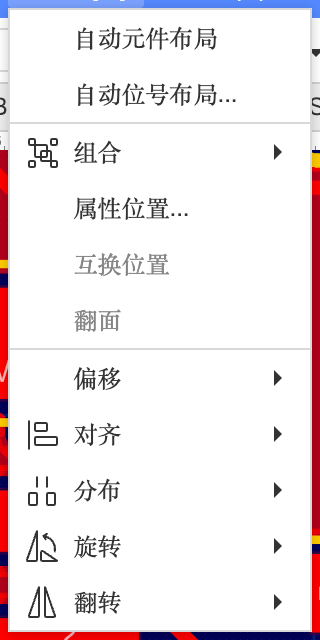
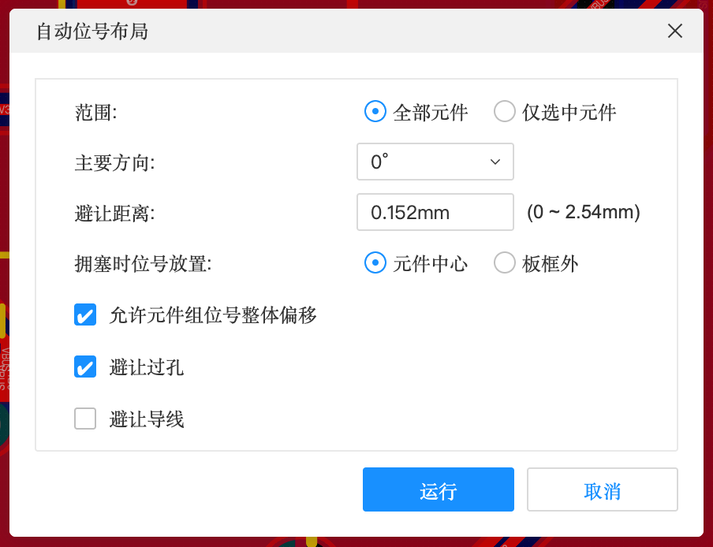
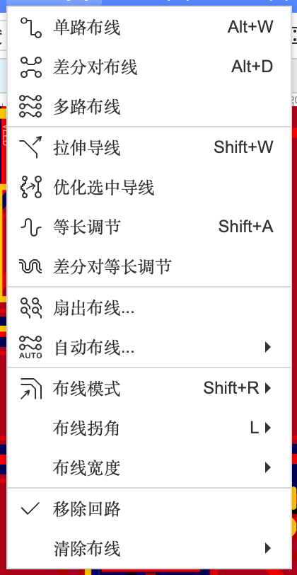
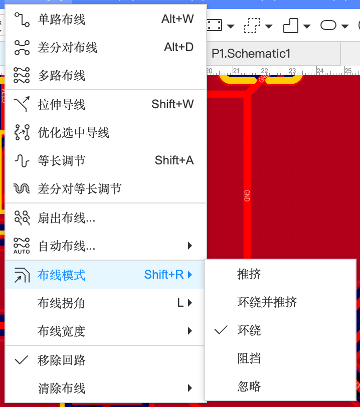
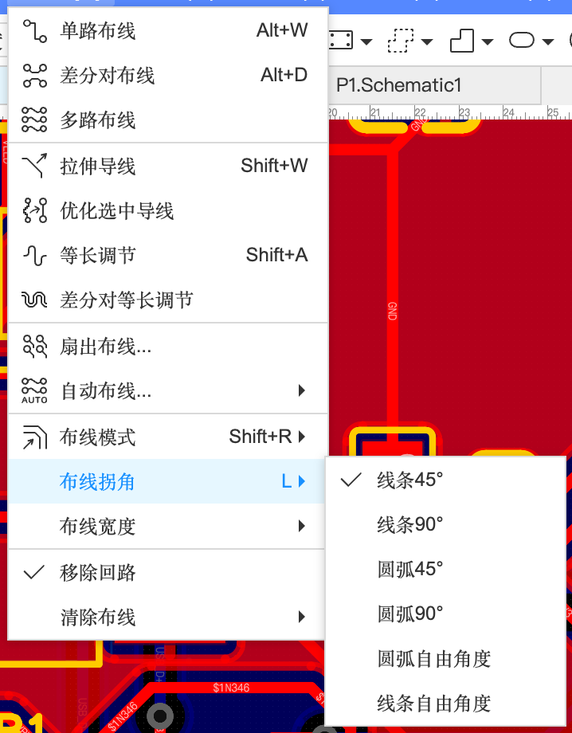
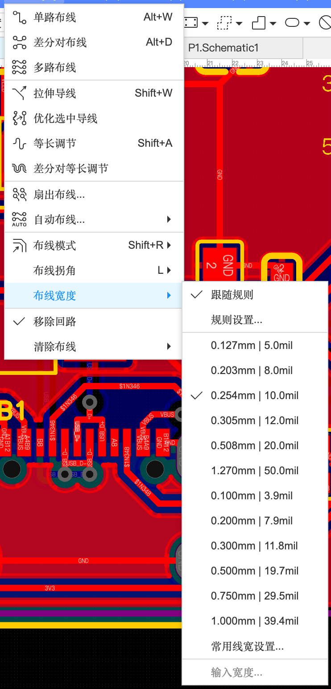
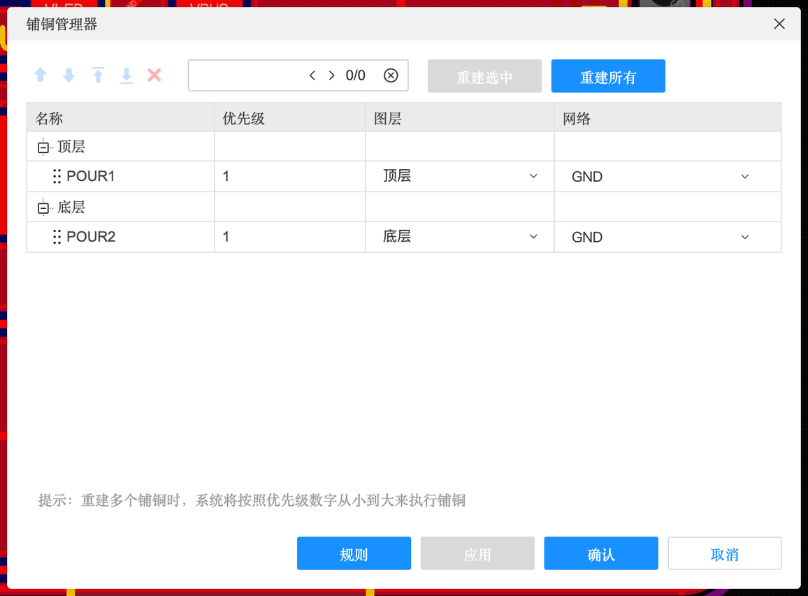

6.2 布局、布线与铜皮
元件怎么摆、线怎么走、铜怎么铺——这是画 PCB 的主体工作。这一页把布局、布线、铜皮三类工具的每个选项讲清楚。
布局#

布局的基本原则（回顾）#
- 接口靠板边：USB、排针、按键放在边上（A-5）
- 相关的元件放一起：去耦电容紧挨芯片电源脚；晶振紧挨芯片
- 先放“定死的”：接口、安装孔、天线、LED 这些位置由外观决定的先放，再放其他
- 信号流顺：输入 → 处理 → 输出，大致按一个方向排开，线就短
布局工具#
| 功能 | 位置 | 说明 |
|---|---|---|
| 交叉选择 / 布局传递 | 设计菜单 / ⇧X、⌘⇧X | 原理图里选中一组元件，PCB 里同步选中；按原理图位置把它们排好（4.5） |
| 自动元件布局 | 布局 → 自动元件布局 | 让软件自动摆（效果一般，可以先自动再手调，见 7.2） |
| 自动位号布局… | 布局菜单 | 把位号丝印（R1、C3…）自动摆到元件旁边不压焊盘的位置 |
| 对齐 / 分布 | 布局 → 对齐 / 分布 | 同原理图（4.3） |
| 旋转 / 翻转 | 空格 / X Y | — |
| 翻面 | 布局 → 翻面 | 把元件从顶层翻到底层（贴片费更贵，一般不用） |
| 偏移 | 布局 → 偏移 → 绝对偏移 / 相对偏移 | 把选中的东西精确移到某个坐标 / 移动指定距离 |
| 组合 | 布局 → 组合 | 一组元件绑在一起移动 |
| 锁定 | 属性面板「锁定：是」 | 摆好的接口、安装孔锁住，免得误拖；「编辑」→「解锁全部」 |

布线#

单路布线 ⌥W#
单击起点焊盘 → 移动 → 在拐弯处单击 → 终点焊盘单击，Esc 结束（A-6）。布线过程中：
- L：切换拐角样式
- ⌥V（或「放置」→「过孔」）：放过孔，切到另一层继续走
- tab：先改线宽再继续画
- 空格：切换拐弯方向
布线模式：碰到障碍物怎么办#

布线模式（Shift+R 切换）
| 模式 | 效果 | 什么时候用 |
|---|---|---|
| 推挤 | 新画的线会把挡路的旧线“推开” | 线密的时候 |
| 环绕并推挤 | 先尝试绕过，绕不过再推 | 默认推荐 |
| 环绕 | 只绕开障碍，不推别人 | 已经布好的线不想被动 |
| 阻挡 | 碰到障碍就停住，不让画过去 | 新手最安全 |
| 忽略 | 不管障碍直接画（会产生 DRC 错误） | 基本不用 |
布线拐角#

线条 45°（默认，最常用）、线条 90°、圆弧 45°、圆弧 90°、圆弧自由角度、线条自由角度。
布线宽度#

信号线用默认 0.254 mm 就行；电源线、大电流的线加粗（0.5～1 mm），估算方法见 2.10 线宽-电流计算器。线宽的最小值、默认值受设计规则约束（7.1）。
修改走线#
| 功能 | 位置 | 说明 |
|---|---|---|
| 拉伸导线 | 布线菜单 ⇧W | 拖动一段线，两头跟着变形，不用删了重画 |
| 优化选中导线 | 布线菜单 | 让选中的线更顺、更短 |
| 移除回路 | 布线菜单 | 同一条网络画出了两条路，自动删掉多余的那条 |
| 清除布线 | 布线菜单 | 一键删除所有（或选中网络的）走线，重新来 |
| 裁剪 | 编辑菜单 | 剪掉一段导线 |
| 自动布线 | 布线 → 自动布线（所有网络 / 所选网络 / 所选器件网络 / 设置） | A-6、B-3 用过；关键线先手动，再自动布剩下的 |
铜皮#
“铜皮”指大块的铜，有几种，区别在于“会不会自动避让”：
| 类型 | 位置 | 特点 | 用途 |
|---|---|---|---|
| 铺铜区域 | 放置 → 铺铜区域 → 矩形/圆形/多边形 | 会自动避开不同网络的焊盘和线，留出间距；同网络的焊盘用“发散/直连”连上 | 大面积 GND（A-7） |
| 填充区域 | 放置 → 填充区域 | 一块实心铜，不避让任何东西（压到别的网络就短路） | 散热焊盘、大电流区域、铜图案（D-3） |
| 禁止区域 | 放置 → 禁止区域 | 这里不许放铜/线/元件（可选） | 天线下方（B-3） |
| 约束区域 | 放置 → 约束区域 | 区域内用特殊设计规则 | 某块区域线要更细（7.1） |
铺铜管理器#

板上有好几块铺铜叠在一起时（比如一块 GND 里面又套一块 3V3），优先级数字小的先铺（界面提示“重建多个铺铜时，系统将按照优先级数字从小到大来执行”）。铺铜之后改了线，记得 ⇧B 重建铺铜，或在「设置」里开「自动重建铺铜区域」。
铜皮的编辑#
- 编辑轮廓（编辑菜单）：拖动铺铜的顶点改形状
- 挖空（编辑菜单）：在铜皮上挖一个洞
- 布尔运算（编辑菜单）：几块区域做合并、相减、取交集（D-3 详解）
- 转为（编辑菜单）：铺铜 ↔ 填充 ↔ 禁止区域 ↔ 挖槽 ↔ 板框 互相转换